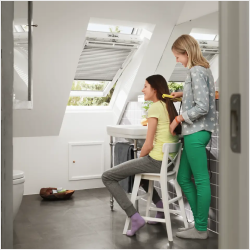

daugiau nei 12 darbo metų
1500
baigtų objektų
baigtų objektų
kokybės sertifikatai
individualus biudžetas
Mūsų partneriai:

Mūsų partneriai:

Mūsų partneriai:

Mūsų partneriai:

VELUX "Premium" langas su viršutine rankena ir 2 kamerų stiklo paketu
Gaminio kodas:
GGL 3068
Medinis, skaidriu laku nulakuotas stogo langas varstomas ergonomiška viršutine rankena; jame integruota orlaide su filtru nuo dulkių ir vabzdžių. Patalpas galima vėdinti net tuomet, kai langas uždarytas. Vidinis lango stiklas yra laminuotas, todėl suteiks saugumo bei sumažins triukšmo, sklindančio iš lauko, lygį. Yra galimybė įrengti nuotolinio valdymo sistemą. Langas su ThermoTechnology™ sistema bei 2 kamerų stiklo paketu, todėl yra energiškai efektyvus, jo Uw - 1,1. Gaminiui suteikiama 10 metų garantija. Langą galima apversti 180 laipsnių kampu ir išvalyti. Yra laikikliai užuolaidėlėms.

VELUX "Premium" langas su viršutine rankena, poliuretano danga ir 2 kamerų stiklo paketu
Gaminio kodas:
GGU 0068
Medinis baltu poliuretano sluoksniu padengtas stogo langas varstomas ergonomiška viršutine rankena; jame integruota orlaide su filtru nuo dulkių ir vabzdžių. Patalpas galima vėdinti net tuomet, kai langas uždarytas. Drėgmei atsparaus paviršiaus nereikia perdažyti, jo priežiūra - minimali. Dėl unikalios liejimo būdu pagamintos konstrukcijos, langą lengva valyti, nes kampuose nėra sujungimų. Puikiai tinka montuoti patalpose, kuriose daugiau drėgmės: voniose, virtuvėse, oranžerijose ir pan. Vidinis lango stiklas yra laminuotas, todėl suteiks saugumo bei sumažins triukšmo, sklindančio iš lauko, lygį. Yra galimybė įrengti nuotolinio valdymo sistemą. Langas su ThermoTechnology™ sistema bei 2 kamerų stiklo paketu, todėl yra energiškai efektyvus, jo Uw - 1,1. Šiam gaminiui suteikiama 15 metų garantija lango paviršiui ir 10 metų - visai lango konstrukcijai. Langą galima apversti 180 laipsnių kampu ir išvalyti. Yra laikikliai užuolaidėlėms.
Dvejopo varstymo VELUX "Premium" panoraminis stogo langas
Gaminio kodas:
GPL 3070
Šį stogo langą su vyriais viršutinėje dalyje galėsite plačiai atidaryti, išstumdami varčią į lauką, ir nekliudomai grožėtis vaizdu pro langą bei įsileisti į kambarį maksimalų dienos šviesos kiekį. Langą taip pat galima apversti 180° laipsnių kampu bei patogiai ir saugiai išvalyti. Įrengta izoliacijos sistema ThermoTechnology™ išsaugos šilumą namuose, kai lauke bus šalta. Galima įsigyti langą su ekonomišku 1 kameros laminuotu stiklo paketu (modeliai GPL 3070) arba energiškai efektyvesnį – su 2 kamerų stiklo paketu (GPL 3068, GPL 3066). Gaminiui suteikiama 10 metų garantija. Langą galima apversti 180 laipsnių kampu ir išvalyti. Yra laikikliai užuolaidėlėms.
VELUX "Premium" INTEGRA panoraminis stogo langas
Gaminio kodas:
GPU 006621
GPU INTEGRA® su vyriais viršutinėje lango dalyje yra vienas iš komfortiškiausių stogo langų. Šis modelis yra valdomas nuotoliniu būdu, tačiau taip pat gali būti varstomas rankiniu būdu. Pro langą atsiveria puikus panoraminis vaizdas, tad jausitės lyg stovėdami balkone, o į kambarį įsileisite maksimalų dienos šviesos kiekį. Langas atsiveria 45 laipsnių kampu. Prasidėjus lietui, jutiklių pagalba langas užsidarys automatiškai. GPU INTEGRA® stogo langą rekomenduojame susieti su vidaus mikroklimato valdymo sistema VELUX ACTIVE. Lango spalva – balta (RAL 9003). Langą galima apversti 180 laipsnių kampu ir išvalyti. Yra laikikliai užuolaidėlėms.
Dvejopo varstymo VELUX "Premium" panoraminis stogo langas, padengtas poliuretanu
Gaminio kodas:
GPU 0070
Šį poliuretanu padengtą stogo langą su vyriais viršutinėje dalyje galėsite plačiai atidaryti, išstumdami varčią į lauką, ir nekliudomai grožėtis vaizdu pro langą bei įsileisti į kambarį maksimalų dienos šviesos kiekį. Drėgmei atsparaus balto paviršiaus nereikia perdažyti, jo priežiūra - minimali. Dėl unikalios liejimo būdu pagamintos konstrukcijos, langą lengva valyti, nes kampuose nėra sujungimų. Puikiai tinka montuoti patalpose, kuriose daugiau drėgmės: voniose, virtuvėse, oranžerijose ir pan. Įrengta izoliacijos sistema ThermoTechnology™ išsaugos šilumą namuose, kai lauke bus šalta.
Galima įsigyti langą su ekonomišku 1 kameros laminuotu stiklo paketu (modeliai GPU 0070) arba energiškai efektyvesnį – su 2 kamerų stiklo paketu (GPU 0068, GPU 0066).Šiam gaminiui suteikiama 15 metų garantija lango paviršiui ir 10 metų - visai lango konstrukcijai. Langą galima apversti 180 laipsnių kampu ir išvalyti. Yra laikikliai užuolaidėlėms.
VELUX "Premium" langas su viršutine rankena ir 2 kamerų stiklo paketu
Gaminio kodas:
GGL 3066
Energiškai efektyvus medinis stogo langas su ergonomiška viršutine rankena bei integruota orlaide su specialiu filtru, apsaugančiu nuo dulkių ir vabzdžių. Unikali ThermoTechnology™ sistema, papildoma sandarumo tarpinė bei 2 kamerų stiklo paketas (Uw 1,0) suteikia puikią šilumos izoliaciją ir sukuria namuose komfortą. Stiklo paketas padengtas specialia išorine danga, kurios dėka langas mažiau rasoja iš išorės ir jį daug lengviau išvalyti. Gaminiui suteikiama 10 metų garantija.
VELUX "Premium" langas su viršutine rankena ir 2 kamerų stiklo paketu, padengtas poliuretanu
Gaminio kodas:
GGU 0066
Energiškai efektyvus medinis poliuretanu padengtas stogo langas su ergonomiška viršutine rankena bei integruota orlaide su specialiu filtru, apsaugančiu nuo dulkių ir vabzdžių. Drėgmei atsparaus balto paviršiaus nereikia perdažyti, jo priežiūra - minimali. Dėl unikalios liejimo būdu pagamintos konstrukcijos, langą lengva valyti, nes kampuose nėra sujungimų. Puikiai tinka montuoti patalpose, kuriose daugiau drėgmės: voniose, virtuvėse, oranžerijose ir pan. Unikali ThermoTechnology™ sistema, papildoma sandarumo tarpinė bei 2 kamerų stiklo paketas (Uw 1,0) suteikia puikią šilumos izoliaciją ir sukuria namuose komfortą. Stiklo paketas padengtas specialia danga, kurios dėka langas mažiau rasoja iš išorės ir jį daug lengviau išvalyti. Šiam gaminiui suteikiama 15 metų garantija lango paviršiui ir 10 metų - visai lango konstrukcijai. Langą galima apversti 180 laipsnių kampu ir išvalyti. Yra laikikliai užuolaidėlėms.
VELUX "Premium" langas INTEGRA su 2 kamerų stiklo paketu
Gaminio kodas:
GGL 306821
Jeigu norite mėgautis maksimaliu komfortu, VELUX INTEGRA langas yra teisingas pasirinkimas. Šis langas valdomas nuotoliniu būdu; ant jo taip pat galima įrengti nuotoliniu būdu valdomas užuolaidėles, markizes arba išorines žaliuzes. Į komplektą įeina lietaus jutiklis, todėl vos tik pradėjus lyti, langas automatiškai užsidarys. Maitinimas - elektros energija; galima įsigyti ir modelį, valdomą saulės energija. Medinis stogo langas nulakuotas skaidriu laku (galima įsigyti ir baltą padengtą poliuretanu). Valdymas - nuotolinio valdymo pulteliu. Unikali ThermoTechnology™ sistema, papildoma sandarumo tarpinė bei 2 kamerų stiklo paketas (Uw 1,1) suteikia puikią šilumos izoliaciją. Gaminiui suteikiama 10 metų garantija. Langą galima apversti 180 laipsnių kampu ir išvalyti. Yra laikikliai užuolaidėlėms.
VELUX "Premium" langas INTEGRA su 2 kamerų stiklo paketu, padengtas poliuretanu
Gaminio kodas:
GGU 006821
Jeigu norite mėgautis maksimaliu komfortu, VELUX INTEGRA langas yra teisingas pasirinkimas. Šis langas valdomas nuotoliniu būdu; ant jo taip pat galima įrengti nuotoliniu būdu valdomas užuolaidėles, markizes arba išorines žaliuzes. Į komplektą įeina lietaus jutiklis, todėl vos tik pradėjus lyti, langas automatiškai užsidarys. Maitinimas — elektros energija; galima įsigyti ir modelį, valdomą saulės energija. Medinis stogo langas padengtas balta poliuretano danga, todėl nereikalauja priežiūros ir tinka drėgnoms patalpoms. Valdymas — nuotolinio valdymo pulteliu. Unikali ThermoTechnology™ sistema, papildoma sandarumo tarpinė bei 2 kamerų stiklo paketas (Uw 1,1) suteikia puikią šilumos izoliaciją. Šiam gaminiui suteikiama 15 metų garantija lango paviršiui ir 10 metų — visai lango konstrukcijai.
VELUX "Premium" panoraminio bei papildomo langų kombinacija
Gaminio kodas:
GPL + GIL
Panoraminis stogo langas sumontuotas kartu su papildomu nevarstomu apatiniu langu atvers puikų vaizdą bei įleis į kambarį daug dienos šviesos. Mediniai skaidriu laku nulakuoti stogo langai tiks jaukiam interjerui. Viršutinis langas varstomas viršutine bei apatine rankenomis. Jame integruota orlaide su specialiu filtru, apsaugančiu nuo dulkių ir vabzdžių. Unikali ThermoTechnology™ sistema, papildoma sandarumo tarpinė bei papildoma sandarumo tarpinė suteikia puikią šilumos izoliaciją ir sukuria namuose komfortą. Gaminiams galioja 10 metų garantija. Viršutinį langą galima apversti 180 laipsnių kampu ir išvalyti. Yra laikikliai užuolaidėlėms.
VELUX stogo langas pasyviam namui
Gaminio kodas:
GGU 008230
Stogo langas sertifikuotas pasyviam namui, šalto klimato
regionams. Pagamintas iš išorinio trigubo stiklo paketo ir papildomo vidinio dvigubo stiklo paketo, todėl šilumos laidumo koeficientas Uw siekia vos Uw 0,51 W/(m2K). Tai yra geriausias rodiklis pasaulyje. Stogo langas maitinamas saulės energija ir komplektuojamas su valdymo pulteliu, kuriuo patogiai valdysite stogo langą vienu prisilietimu. Langas pagamintas iš medienos ir padengtas balta, nereikalaujančia priežiūros poliuretano danga. Šiam gaminiui suteikiama 15 metų garantija lango paviršiui ir 10 metų - visai lango konstrukcijai.
VELUX Studio trio
Gaminio kodas:
GGLS 2070
Naujojo VELUX sprendimo VELUX "Studio trio" privalumai – daugiau dienos šviesos ir gaivaus oro kambaryje bei platesnis vaizdas pro langą. Viename rėme – trys langai, vidurinis langas nevarstomas, šoniniai langai varstomi viršutine rankena. Šiam langui montuoti gaminamos specialios montavimo tarpinės, todėl montavimas paprastas ir greitas. Trijų langų kombinacija atrodo itin elegentiškai, ji optiškai praplečia erdvę ir tinka šiuolaikiškiems interjerams. Šis sprendimas tinka tiems kambariams, kuriems reikia dienos šviesos. Gaminamas baltai dažytas, su vienos ar dviejų kamerų stiklo paketu, dviejų dydžių. GGLS 2066 šiluminis laidumas Uw yra 1,2, o GGLS 2070 – 1,5.
VELUX Studio trio
Gaminio kodas:
GGLS 2066
Naujojo VELUX sprendimo VELUX "Studio trio" privalumai – daugiau dienos šviesos ir gaivaus oro kambaryje bei platesnis vaizdas pro langą. Viename rėme – trys langai, vidurinis langas nevarstomas, šoniniai langai varstomi viršutine rankena. Šiam langui montuoti gaminamos specialios montavimo tarpinės, todėl montavimas paprastas ir greitas. Trijų langų kombinacija atrodo itin elegentiškai, ji optiškai praplečia erdvę ir tinka šiuolaikiškiems interjerams. Šis sprendimas tinka tiems kambariams, kuriems reikia daugiau dienos šviesos. Gaminamas baltai dažytas, su vienos ar dviejų kamerų stiklo paketu, dviejų dydžių. GGLS 2066 šiluminis laidumas Uw yra 1,2, o GGLS 2070 – 1,5.
Reikia konsultacijos? Susisiekite su mumis!